万相团队成立于2019年，深耕保险规划、财务规划、高端医疗、多元资产配置等金融领域。
Founded in 2019, the Wanxiang team specializes in insurance planning, financial planning, premium healthcare and diversified asset allocation.
ABOUT US
EXPERTISE. INTEGRITY. CARE.
万相团队成立于2019年，深耕保险规划、财务规划、高端医疗、多元资产配置等金融领域。
Founded in 2019, the Wanxiang team specializes in insurance planning, financial planning, premium healthcare and diversified asset allocation.
我们拥有MDRT全球寿险百万圆桌、RFP国际注册财务规划师、LOMA北美寿险管理师、RPP注册养老规划师、CITIC信托规划师、中科院认证心理咨询师、高级人工智能训练师等行业资质，并陆续获得IQA国际品质金奖、IMA保险名家等行业荣誉。
Our professional qualifications include MDRT membership, RFP financial planning, LOMA life insurance management, RPP retirement planning, CITIC trust planning, Chinese Academy of Sciences-certified psychological counseling, and advanced AI training. Our team has also received industry honors including the IQA International Quality Award and IMA recognition.
团队具备完整的品牌辐射能力，除传统金融保险业务外，还拥有课程研发、行业认证、文创设计等业务，赋能全同业。
Beyond financial and insurance services, our capabilities span curriculum development, industry certification, and cultural and creative design—empowering professionals across the industry.
我们竭诚为每一位客户提供有专业、有立场、有温度的服务，以客户价值为核心，数据依规，体验为王。
We are committed to serving every client with expertise, a clear professional stance and genuine care. Client value is at our core, data practices follow applicable rules, and experience comes first.
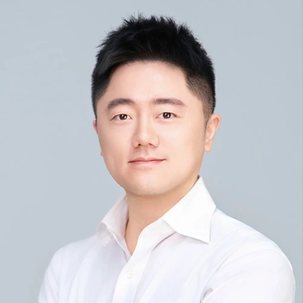
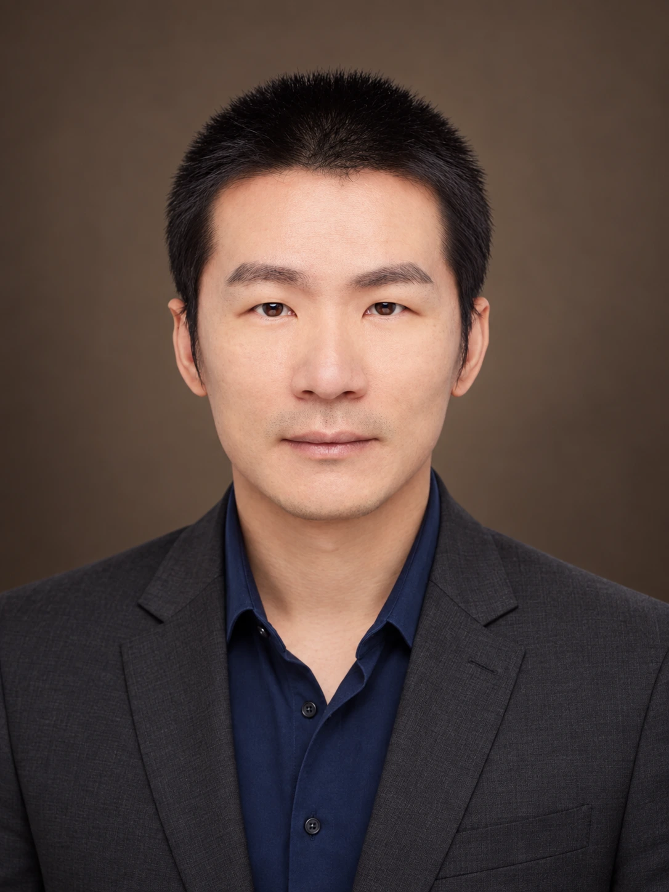
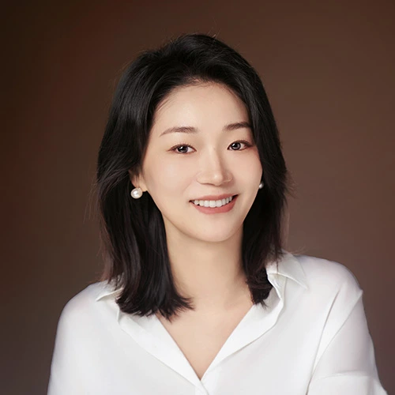
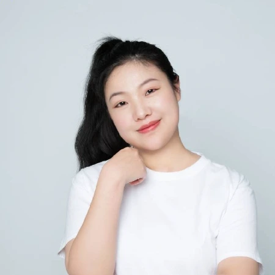
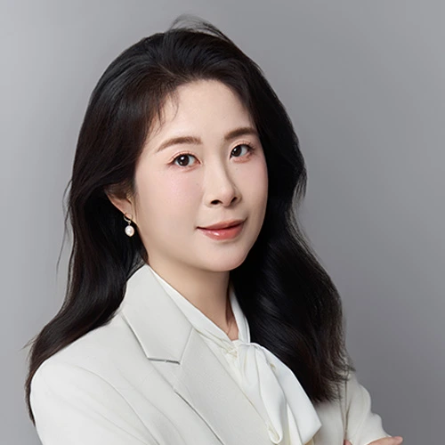
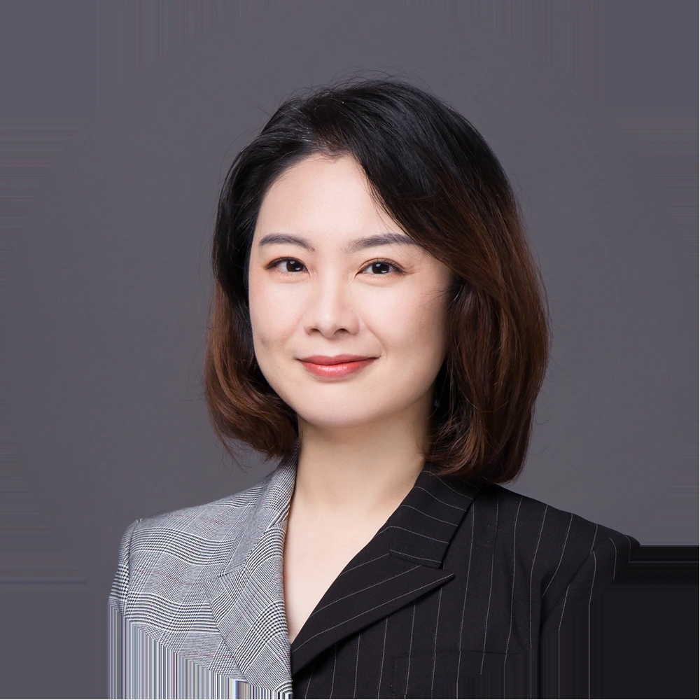
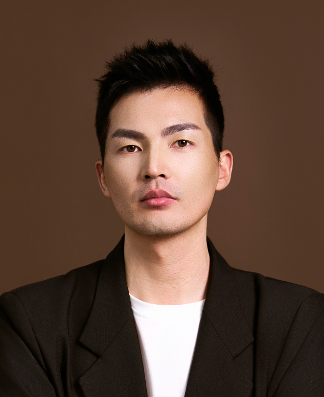
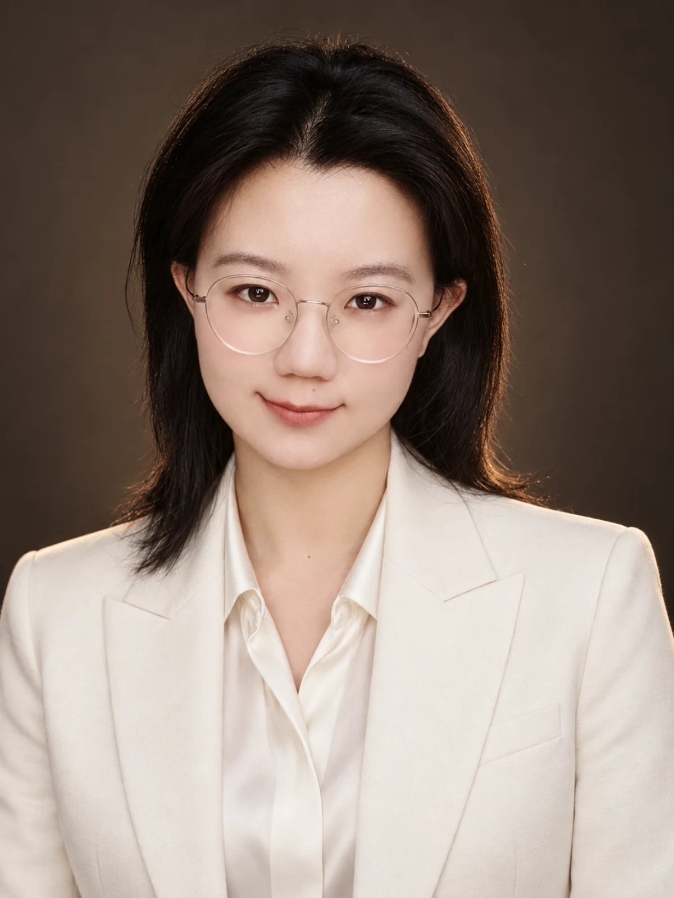
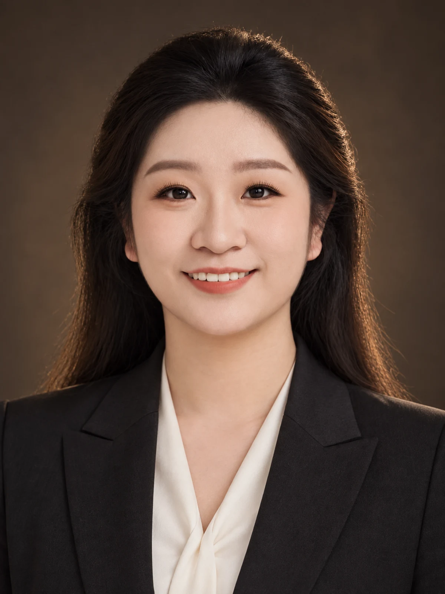
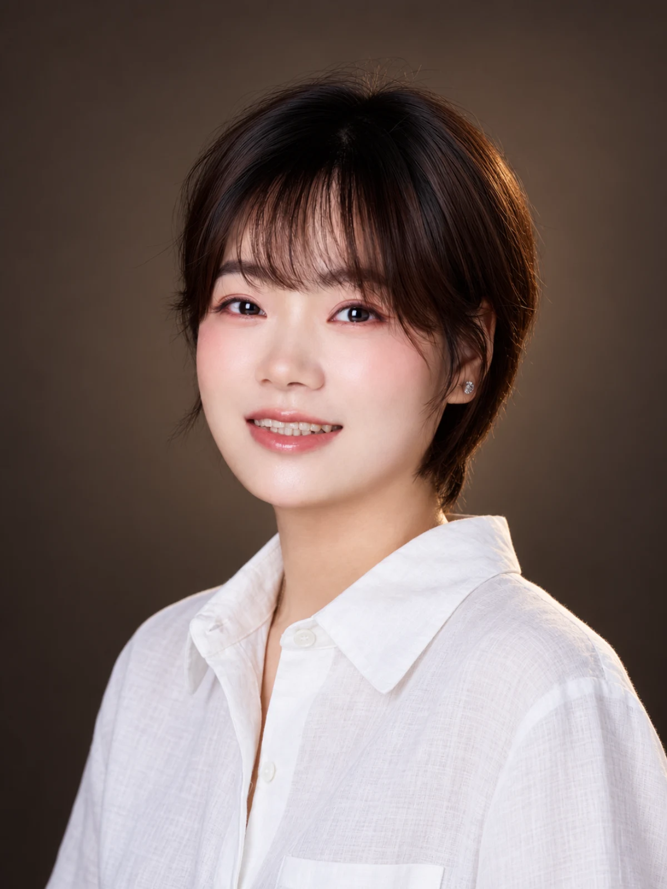
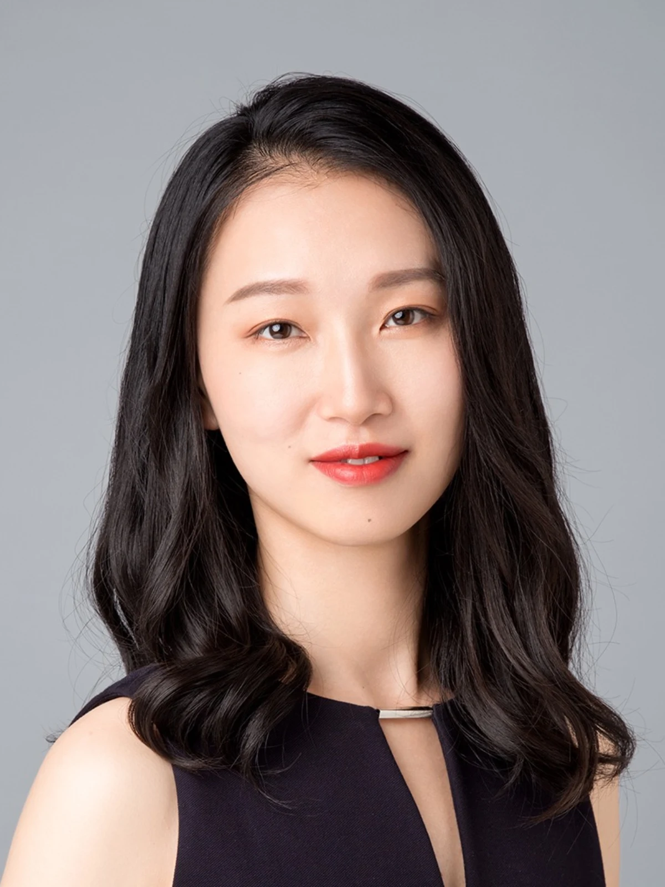
03 / OUR VISION
科技不应取代人的温度，而应帮助保险从业者更清楚地表达价值、更稳定地服务客户。
Technology should never replace human warmth. It should help insurance professionals communicate their value more clearly and serve their clients more consistently.
BAOX.AI · OUR COLLECTIVE
Boundless vision. Endless possibility.